不知道大家有没有这样的情况发生，自己设计的作品，“乍一看不怎么样，仔细一看，还不如乍一看”！
其实不耐看，或者不敢放大看的原因都是细节做的不到位。
最近在做手机OS的主题图标，对细节的感触很大，今天结合主题图标来和大家聊聊，我们可以从哪些方面注意自己的设计细节，大纲如下：
给造型加点细节
多加点质感的细节
不要让图标看着灰灰的
风格特点的运用
1. 给造型加点细节
造型是所有设计执行的第一步，造型做不好，说别的都没用。
那如何能给造型加点细节呢？
打个比方，我们要画一个圆角矩形：
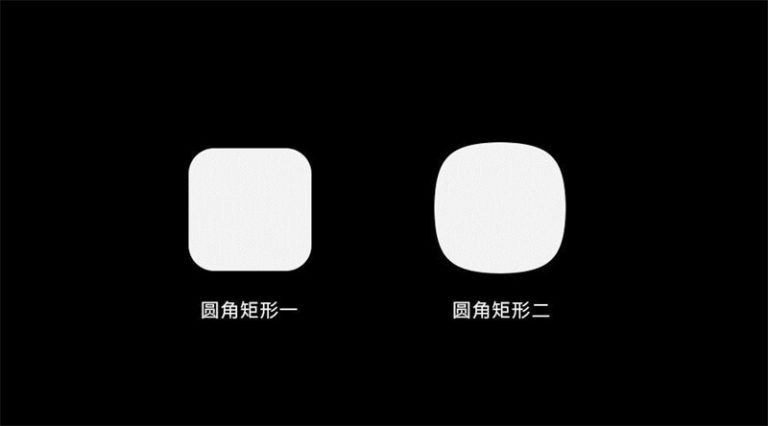
哪个更有设计感，更有细节呢？当然是第二个，第一个一看就是默认的圆角，没有细节可言，放在真正的案例中就像下图一样：
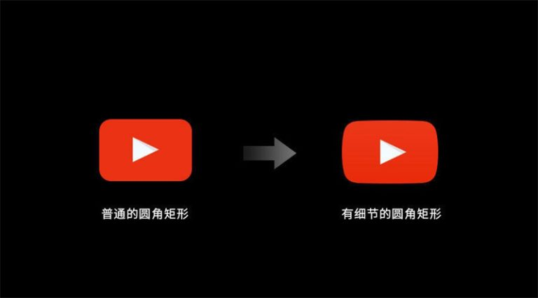
如果 youtube 的图标用了第一个普通的圆角矩形，可能就有现在那么耐看了！
造型加点细节，你也可以理解为，别让造型太普通，比如，我们要做一个定位图标：
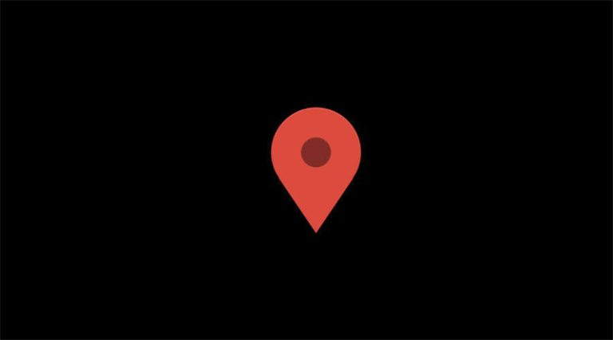
这是一个很常见的定位图标，在图标网站上一搜一大把，那如何让他变得不那么普通呢？看下图：
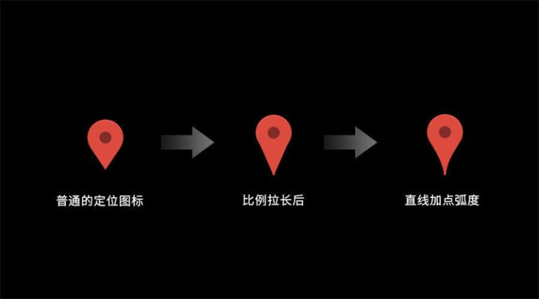
首先比例上可以做点事情，比如拉长，之后在线条上再做点文章，比如给直线加点弧度，最后就得到了一个看起来没那么普通的定位图标了，它就是谷歌地图上面的一部分：
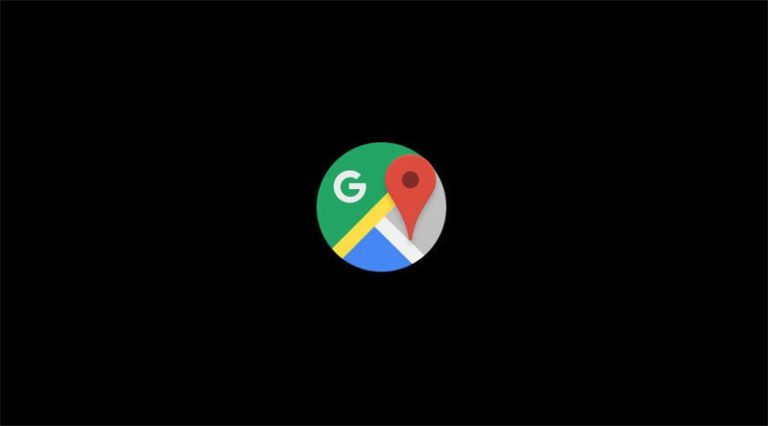
方法不止一种，大家可以多思考总结，观察优秀的设计，借鉴他们，然后超越他们！
2. 质感的细节
假设我们现在做一个文件管理的图标：
这就是一个细节很少的普通图标，我想在这个图标上面加一些轻质感，如何做呢？
例如转折处加一点高光：
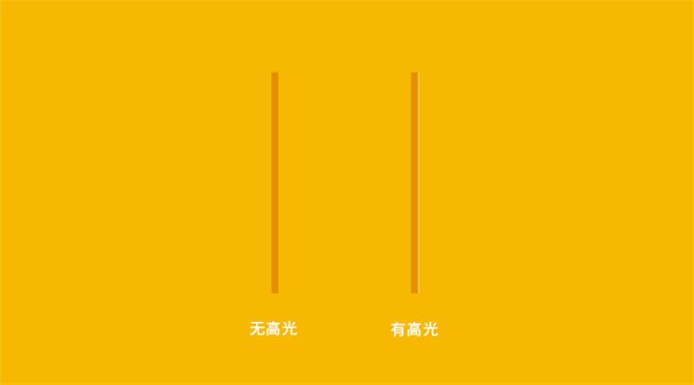
例如纽扣加点真实的效果：
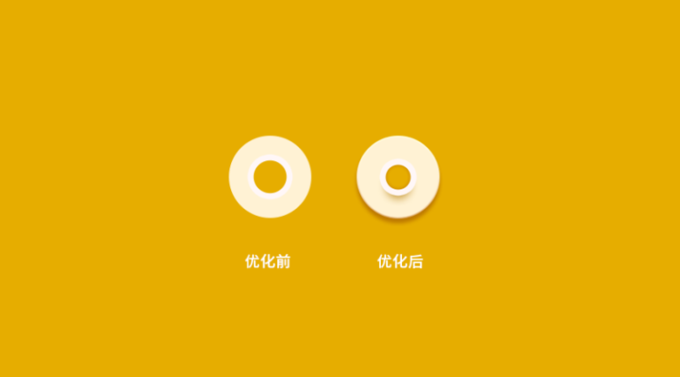
再例如加点渐变折叠的设计语言，来丰富层次：
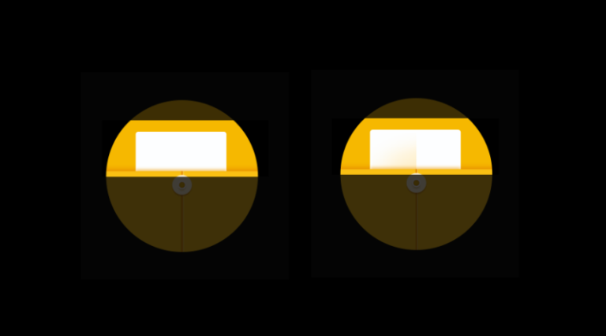
优化前后的图标对比如下图：
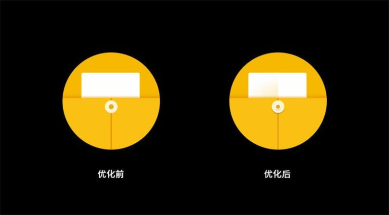
这样看着就显得精致、专业多了！
但这里需要强调一点，由于我的前期风格定位是轻质感与轻拟物，所以加了一些质感的细节，但并不完全适用于任何场景，所以大家一定要具体场景具体分析哦！
3. 不要让图标看着灰灰的
有的时候颜色用不好，很容易就使图标变脏了。
这里我们要记住两点，一个是增强主影响与图标背板的对比度，二是主形象一定要尽可能的提亮突出。
举个例子，下图是一个相机的图标：
这个图标存在的问题就是摄像头与背景对比不够强，粘在了一起，使整体看起来灰灰的，尤其是在饱和度较高的背景上面，为了提高对比，要么让摄像头颜色变浅，要么让背景颜色变浅，我原则第二个方案，把背景颜色变成白色，如下图：
这样看着就好多了，但是放在纯黑色背景下，我们会发现，好像摄像头的颜色还是有些灰，不够明亮，那我继续将其提亮，如下图：
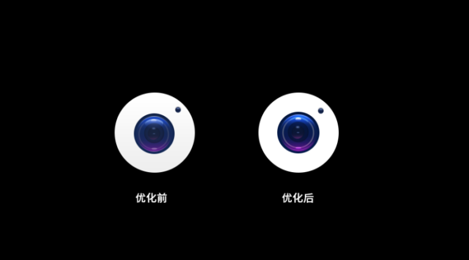
这样整个图标就做的差不多了。
所以，大家一定要让图标的层次拉开，该亮的地方亮起来，该暗的地方暗下去，大胆果断一点，都是80、90后，咱怕啥！
4. 关于风格特点
有些时候，即使图标的造型没有特别惊艳，如果能赋予一个统一的风格特点，也会使图标看起来非常出彩。
关于风格特点，举几个例子，比如颜色：
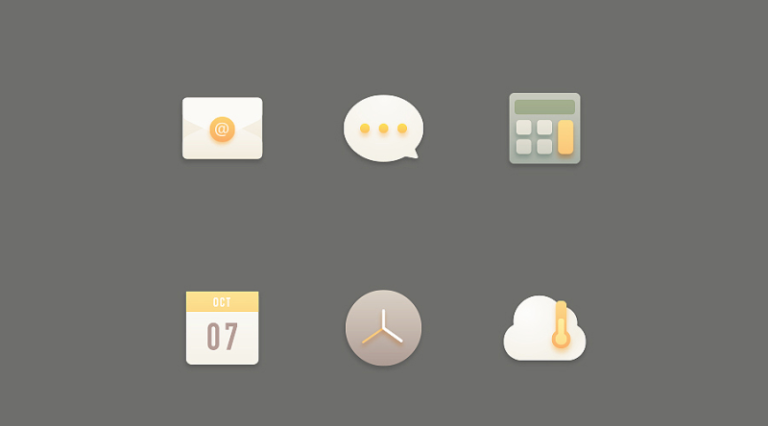
高级灰的颜色就是这套图标很重要的风格特点。
形状：
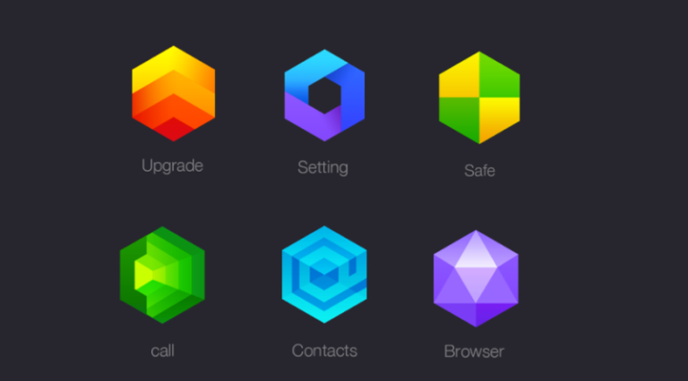
这套图标得风格特点就是和六边形形进行结合。
纹理：
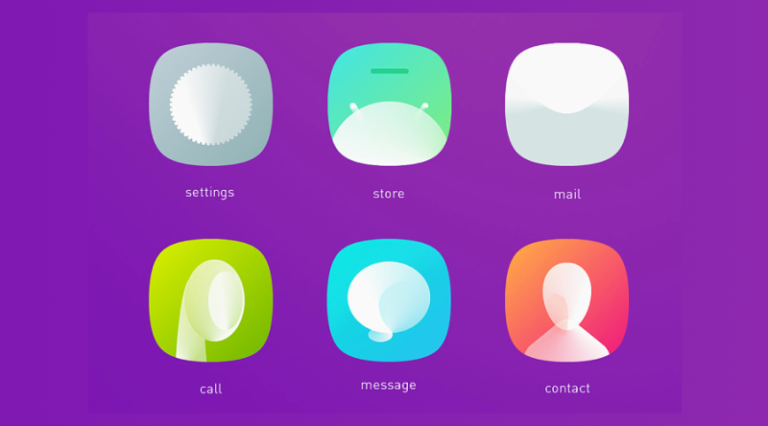
柔和的渐变就是这套图标的风格特点。
如果用户看了你的设计之后，没有任何记忆点，那就基本上是没啥风格特点了，所以前期规划时一定要考虑好！
总结
我们在欣赏别人优秀的作品时，不是随便看看就好了，不仔细分析，很难看出里面的细节，而如果你一直不注意细节，作品怎么可能会精致耐看呢？对不对！

济南海右博纳品牌营销咨询有限公司
Copyright 2001-2019 All Rights Reserved Sivibrand.
王伟品牌顾问微信